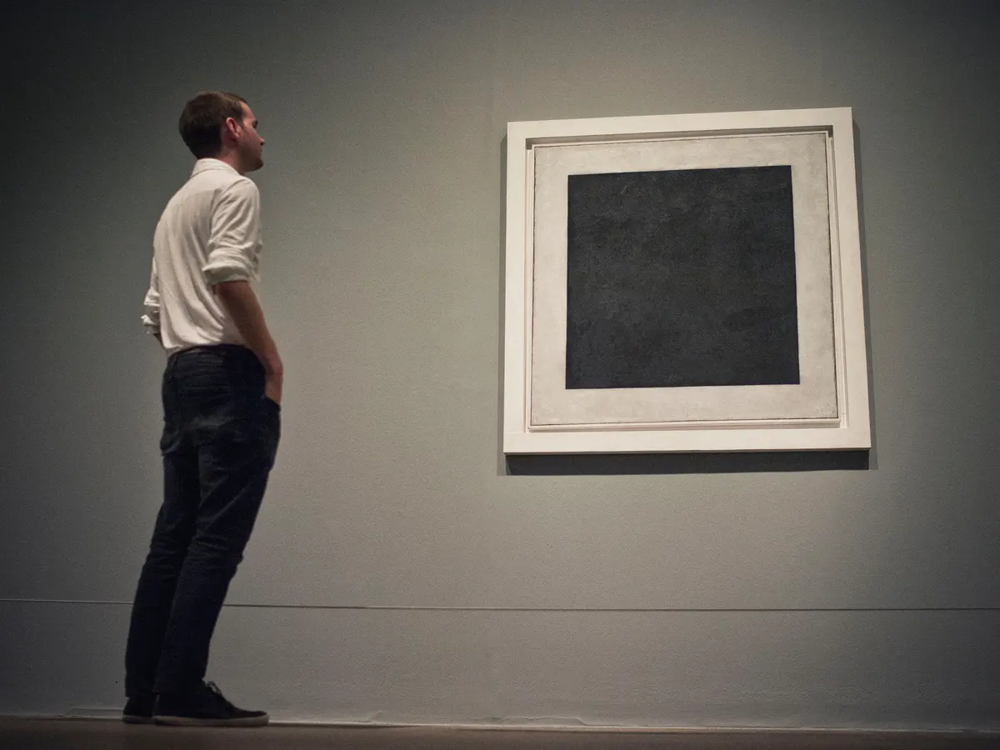

Kazimir Malevich (1878-1935), a Russian man born of Polish parents, painted four versions of Black Square spanning 1913 to the late 1920s or early 1930s.
The medium he chose to convey his intricate and almost revolutionary vision was oil on linen. It was first featured at the Last Futurist Exhibition of Paintings 0,10 at the Dobychina Art Bureau, Petrograd in 1915-1916.
The theme behind this exhibition was that with the seeming destruction of the old world, the new world would begin again at zero. The figure “10” refers to the ten painters whose work was to be exhibited although in reality 14 artists were involved.
The world he lived in experienced great upheaval during the years that he was painting Black Square. The First World War was ongoing. The tensions in Russia, relating to the unrest that began in 1905 and culminated with the Boleshevik Revolution in 1917, all explain the sense of an impending new world order for Malevich and his Russian artist counterparts.
What could it mean?
Malevich referred to the movement his painting encompassed as suprematism where one or more geometric forms is represented on a white background. Obviously, this painting took the form of a black square. The artistic theory of suprematism involves Malevich’s conviction that only in art is there a "supremacy of pure feeling." In this sense, he was disinterested in representing the real, objective world as many artists had traditionally done.
A seemingly simple black square belies the magnitude of feeling which the work represents. Malevich referred to it as the “zero point of painting” which he described at the time as "I transformed myself in the zero of form and emerged from nothing to creation.” The white background emphasizes nothingness. So, from this simplest of visions comes the complexity of human experience.
What else could it be?
Until recently it was believed that Malevich had hastily painted a simple black square. However, in 2015 x-ray analysis revealed that Black Square was not a simple painting of black paint on white linen, but rather that underneath the monochromatic square were painted two paintings of colourful, intricate geometric shapes.
Experiment with the avant-garde
Experience the "supremacy of pure feeling." Key the letters r, y, b, g, o to toggle the square through red, yellow, blue, green, orange. Mouse over the square to return it to black. How does the expected or unexpected color change affect your emotions and perceptions? Which color makes you feel most grounded, pensive, and at peace?